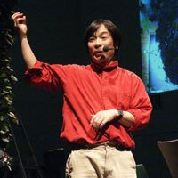

藤幡正樹
(ﾒﾃﾞｨｱ･ｱｰﾃｨｽﾄ)
(東京芸術大学教授)
1956年生まれ 大学時代に､ｱﾙﾊﾞｲﾄして買った最初のｺﾝﾋﾟｭｰﾀが台湾製のAppleIIのﾃﾞｯﾄﾞｺﾋﾟｰだった｡ その後は､ｱﾆﾒｰｼｮﾝ､ﾋﾞﾃﾞｵ､ｺﾝﾋﾟｭｰﾀの融合を求めて80年代からさまざまな表現をこころみてきたが､特にここ15年は､地域に根ざしたﾌﾟﾛｼﾞｪｸﾄ『Field Work』をﾖｰﾛｯﾊﾟ､日本各地で展開中｡今年は秋にｼﾞｭﾈｰﾌﾞで大きな展覧会が開催される｡